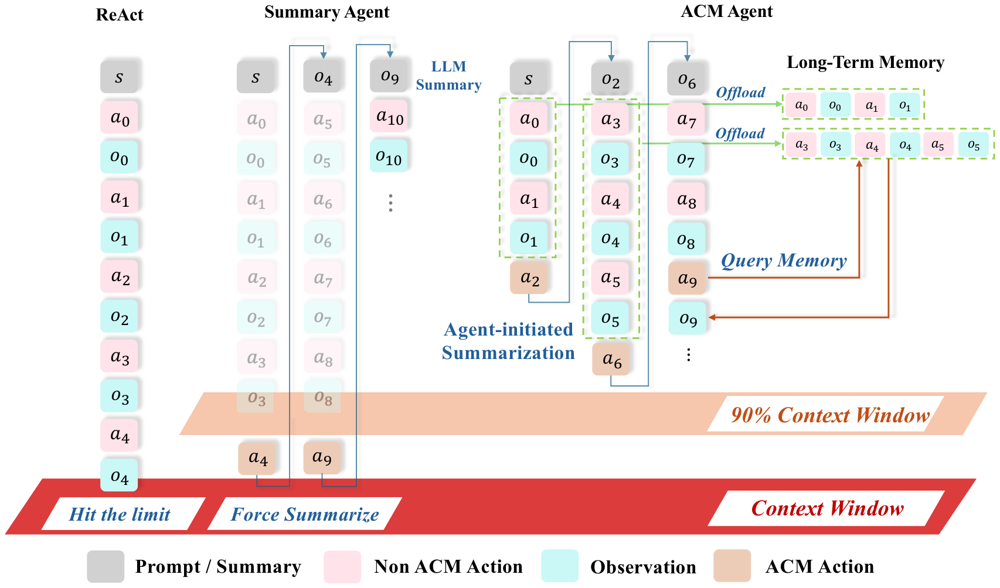
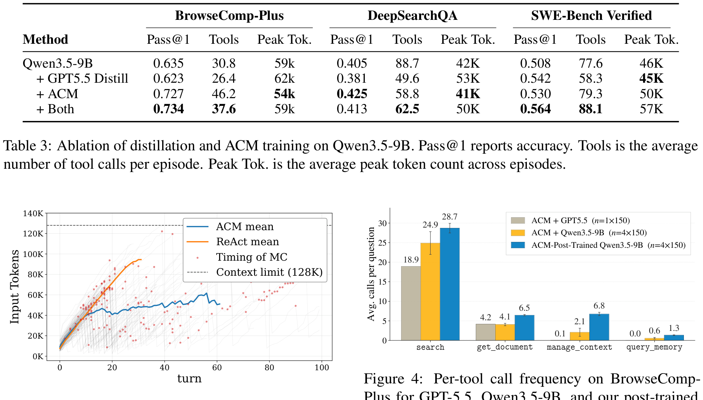
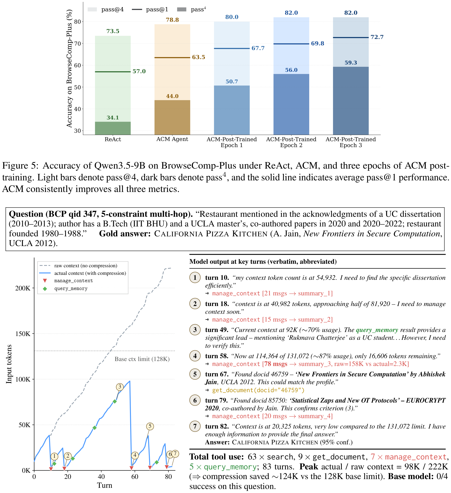

「上下文的纪律」系列 · 第 7 篇
什么时候该压缩，模型自己能学会吗？
▍压缩的时机，现在是谁在定
主流的上下文压缩，触发权多半不在模型手里：要么是外部监视器盯着占用率，超过阈值就强制摘要；要么是等超窗报错再补救。规则简单可靠，但有一个先天的错位：它看不见模型在想什么。模型可能正要把前五十轮的线索收拢成结论，一条水位规则把细节压掉了；也可能早就在同一批线索上绕圈，该压缩释放空间了，阈值还没到，没人动。
卡内基梅隆团队今年发表的这篇论文持另一种立场：压缩时机本身是任务执行中的一个决策，应该由正在推理的模型自己决定。做法分两步：先给模型两个动作，压缩与查回，压缩时原文落盘不丢；再用一套教师带学生的后训练，教会它什么时候该压、什么时候不该压。
【人工补充位 · 建议2–4句】写一段你的现状与经历：你现在用的工具压缩由谁触发（固定阈值／超窗报错／自己手动清）；有没有遇到过"压缩来得不是时候"——压掉了正要用的线索，或者死循环时迟迟不压；你自己判断一个任务"该清上下文了"的信号是什么。
本期论文
ACM: Agentic Context Management for Long Horizon Tasks
ACM：面向长视野任务的智能体自管上下文
Xiaochuan Li, Ryan Ming et al.（卡内基梅隆大学；Meta为顾问角色），2026-07（arXiv:2607.23809v1）
简要结论：把上下文管理做成智能体自己的两个动作（压缩时原文写盘、按编号查回），再用双约束示范数据后训练时机判断。Qwen3.5-9B在三个基准上较ReAct基线相对提升8%到27%，BrowseComp-Plus上0.727超过参数量40多倍的397B开源模型；峰值token同步下降，独立尝试之间答案更一致。
名词速查
▸ BrowseComp-Plus：多约束多跳的网络检索任务基准，答案要跨多个来源交叉验证才能确定。
▸ DeepSearchQA：深度搜索问答基准，任务需要大量工具调用和长程探索。
▸ SWE-Bench Verified：从真实GitHub issue构建的修复任务基准的精校子集（本系列第4篇荐读论文用的同一基准）。
▸ Pass@1与pass@4、pass4：Pass@1为单次尝试通过率；pass@4为四次独立尝试至少一次通过的比例，pass4为四次全过的比例，两者差距反映尝试之间的稳定性。
▸ on-policy（同策略）训练：学生在自己跑出的轨迹上学习，教师在旁边给点评，而不是照抄教师的标准轨迹。
论文用三种范式把问题摆开（图1）。ReAct式：不做管理，轨迹一路涨到撞上下文上限。摘要智能体式：外部监视器盯占用，过了阈值（图里画的是90%）就强制摘要，原消息丢弃，模型在摘要上继续推理。ACM式：模型自己决定何时压缩，原文外存，需要时查回。摘要式的动线在工程上最常见，也正是论文瞄准的对照。
"Existing context compression methods inevitably incur information loss and are triggered by rigid heuristic rules, leaving them misaligned with the agent's evolving reasoning focus."
── 中译：既有的上下文压缩方法不可避免地损失信息，且由僵化的启发式规则触发，与智能体不断演进的推理焦点脱节。（原论文摘要）
为什么触发权要紧：外部阈值衡量的是资源还剩多少，而压缩值不值得，取决于被压的内容后面还用不用，这个判断需要模型对自己推理进展的了解。论文还引了此前的发现：连前沿模型也难以判断压缩的合适时机。这解释了本文的两步走：只给工具不够，还要训练。
在方法版图上，论文按五个维度给同类工作定位：是否主动压缩工作上下文、管理策略是否可训练、原文是否保留可取回、压缩是否由智能体自己发起、训练数据是否开源。
| 方法 | 主动压缩 | 策略可训练 | 原文保留 | 智能体发起 | 数据开源 |
|---|---|---|---|---|---|
| ACE | 否 | 否 | 否 | 否 | 是 |
| Mem1 | 否 | 是 | 否 | 否 | 是 |
| ReSum | 是 | 是 | 否 | 否 | 否 |
| ACON | 是 | 否 | 否 | 否 | 是 |
| SUPO | 是 | 是 | 否 | 否 | 否 |
| AgentFold | 是 | 是 | 否 | 是 | 否 |
| ACM（本文） | 是 | 是 | 是 | 是 | 是 |
表 1｜上下文管理方法五维定位（原论文Table 1，作者整理）

图 1｜三种范式：ReAct撞到上限；摘要智能体在90%占用处被强制摘要并丢弃原消息；ACM智能体自主决定压缩时机，原文外存（原论文Figure 1）
框架只加两个动作。第一个是manage_context：把上一个摘要边界之前的全部消息交给摘要器压成一段；原文不丢弃，写入磁盘上的外部文件；每段摘要有唯一编号，并保留编号到原文的映射。窗口里留下摘要，外部存着全量。第二个是query_memory：拿编号查原文，只返回与当前需要相关的片段。压缩掉的历史不是封存，是换了个地方待命。
"无损"的口径要说明：窗口内保留的是摘要而非原文，与上一篇把窗口内容换成编号引用的做法不同；无损指的是原文永远可取回，这一点两家一致。设计上的参照是人类记忆的分工：工作记忆只放当下推理需要的东西，其余进长期记录，需要时再调取。
实现是克制的：主循环不改，终止条件照旧（给出答案或窗口到限），动作空间只多这两项。这意味着它不需要换智能体框架，现有ReAct式的循环直接可用。
只给工具，模型用不好时机，这一点后文的数据会显示（不训练的ACM底座已超基线，但离训练后还有距离）。训练数据的生成用教师带学生、同策略的框架，约束是双向的，论文称双约束。
方向一：学生不带压缩工具跑任务，教师拿着参考答案逐段审查轨迹，标出"这里早就该压缩了"，典型情形是在同一批线索上绕圈的死循环，据此生成插入压缩动作的示范。方向二：学生带着工具跑，教师标出"这里不该调压缩"，把那一步换成直接收网作答，或者再深挖一步搜索。两个方向合起来教的不是压缩本身，是时机：该压时压，不该压时不压。
标注之后，学生从教师给出的整改点继续把任务跑完，教师的评估作为软监督信号：教师对学生生成的每个助手token给出前K个候选（K取20）的概率分布，学生在自己的轨迹上匹配这个分布，系统提示、用户输入和工具输出都掩掉不算。数据质量把两道关：拒绝采样，只保留学生出现过失败的轨迹，确保从真难题学；内容过滤，教师的解释只能引用轨迹特征（重复查询、循环探索、证据已足），不得提及参考答案本身。训练时再掺入学生原始轨迹的自蒸馏重采样以稳定优化。整个过程不走重型强化学习。
主实验在Qwen3.5-9B上做，三个基准覆盖两类任务形态：BrowseComp-Plus和DeepSearchQA是长程搜索，SWE-Bench Verified是仓库修复。
| 方法（Qwen3.5-9B） | BrowseComp-Plus | DeepSearchQA | SWE-Bench Verified | 峰值token （BrowseComp-Plus） |
|---|---|---|---|---|
| ReAct基线 | 0.570 | 0.367 | 0.489 | 63k |
| ReSum（强制摘要） | 0.608 | 0.371 | 0.475（降） | 68k |
| ACON（强制摘要） | 0.614 | 0.380 | 0.480（降） | 65k |
| ACE（记忆智能体） | 0.589 | 0.352 | 0.494 | 71k |
| ACM（只给工具） | 0.635 | 0.405 | 0.508 | 59k |
| ACM+后训练 | 0.727 | 0.425 | 0.530 | 54k |
| 参考：Qwen3.5-397B-A17B | 0.653 | 0.710 | 0.682 | 51k |
| 参考：Gemini3-Flash | 0.733 | 0.619 | 0.732 | 72k |
表 2｜三个基准的Pass@1（原论文Table 2，作者整理；峰值token为各基准内逐回合最大上下文的平均）
较ReAct基线，后训练后的ACM在三个基准上相对提升27%、16%、8%。两组对照有信息量。一组是强制摘要类基线：ReSum和ACON在两个搜索基准上小幅领先ReAct，在修复基准上反而落后，说明固定阈值触发在任务形态间不稳；ACM三项全正。另一组是前沿模型：BrowseComp-Plus上9B的ACM拿到0.727，超过参数量40多倍的Qwen3.5-397B-A17B（0.653），与Gemini3-Flash（0.733）几乎持平；DeepSearchQA（0.425对0.710）和SWE-Bench（0.530对0.682）仍明显低于前沿，论文"接近40倍大模型"的说法只在搜索基准上成立。
两个副产物值得一提。工具调用次数翻倍（BrowseComp-Plus上从19.5次到46.2次），论文观察到Pass@1与工具调用数正相关：小模型靠探索补能力，上下文管住了才有预算去探索。峰值token全线下移，三个基准分别从63k、46k、59k降到54k、41k、50k，服务端的KV缓存压力同步变小。
行为层面的证据比分数更能说明学到的是什么。图2把两类智能体的上下文增长画在一起：ReAct的平均曲线一路爬向128K上限；ACM的曲线是锯齿形，压缩点（图中红点）出现在离上限还很远的位置。模型学会的是提前压缩，不是等撞墙再救。

图 2｜上下文随轮次的增长：灰色锯齿为ACM各轨迹，红点为压缩时机，远离128K上限即触发；黄色为ReAct平均线，一路逼近上限（原论文Figure 3）
单个案例（图3）把两个动作的配合摆得很清楚。一道五个约束交叉验证的检索题，模型跑了83轮：原始历史累计222K token，实际窗口峰值只有98K，全程未碰128K上限；期间7次压缩、5次查回，63次搜索、9次取文档。思考摘录里能看到模型在自检（"现在54,932 token，我需要更高效地定位"），压缩之后又回头查过历史，说明压掉的内容确实被再读。这道题基座模型四次尝试全败。

图 3｜案例：上方两条线为原始与实际上下文（222K对峰值98K），下方为编号1–7的关键轮次摘录，可见自检、压缩与查回交替（原论文Figure 6）
稳定性方面，三个训练轮次后，pass@1从57.0（ReAct）升到72.7，pass@4与pass4同步上升且两者差距收窄：独立尝试之间给出的答案更一致。论文的解释是干净、组织良好的上下文让重复尝试的结果更可复现。
消融回答了一个自然的疑问：光蒸馏强教师的成功轨迹够不够。不够：只加GPT-5.5蒸馏，两个搜索基准上甚至低于不做训练的ACM底座；只用ACM数据，三项全升；两者结合总体最好（DeepSearchQA除外）。论文的读法是蒸馏补通用解题能力，ACM数据补上下文管理这块专门技能，两者互补。
| 配置（Qwen3.5-9B） | BrowseComp-Plus | DeepSearchQA | SWE-Bench Verified |
|---|---|---|---|
| ACM只给工具 | 0.635 | 0.405 | 0.508 |
| +GPT5.5蒸馏 | 0.623（降） | 0.381（降） | 0.542 |
| +ACM训练数据 | 0.727 | 0.425 | 0.530 |
| +两者 | 0.734 | 0.413 | 0.564 |
表 3｜蒸馏与ACM训练数据的消融（原论文Table 3，作者整理）
▍注记：这篇论文的边界
主实验单一底座（Qwen3.5-9B），教师同家族；蒸馏对照只用了GPT-5.5一个教师。三个基准都是长探索型任务，压缩时机敏感的任务上收益最大，其他任务形态未验证。窗口内保留的是摘要，压缩质量依赖摘要器；"无损"指原文可取回，不是窗口内保真。搜索类基准上仍明显低于前沿模型。实验全部在CMU完成，Meta为顾问角色。代码、数据与模型检查点已开源。
▍时机交给模型，落到自己的工作流
论证链条收拢：压缩时机是任务中的决策，外部水位规则与推理状态脱节；给模型两个动作（压缩时原文落盘、按编号查回），再用双向的示范数据教时机；三个基准全升，搜索类基准上9B够到前沿；行为证据显示学到的是提前压缩与更长探索，答案在独立尝试间更稳定。系列到这里，四条路线凑齐了：动手之前先备料，进窗口之前先放行，进了窗口压而不丢，压与取的时机自己定。运行时的上下文管理就此成套。还剩一个方向没有碰：这些用血换来的上下文经验，能不能不随会话结束而消失，变成仓库里可维护的资产传下去。
落到自己的工作流，三个可以直接用的做法：
1. 查一遍自己工具链的压缩触发：是固定阈值、超窗报错，还是根本没管。把压缩时机当成可以改进的东西，而不是写死就不管的配置。
2. 给模型压缩工具的同时，给"不该压"的边界：什么时候证据已足该收网、什么时候压缩只是拖延。这篇的训练数据证明，反向示范与正向示范同样值钱。
3. 原文落盘、编号可查是底线：窗口里放摘要还是放引用可以按任务选，原文必须可取回。
【人工补充位 · 建议3–5句】结合你的工作流写评论：你敢不敢把压缩时机交给模型自己定，顾虑是什么（失控／重复压缩／漏压关键内容）；四条路线对照你现在的链路，最缺的是哪一条；如果只能先补一条，你会从哪个入手。
论文：Agentic Context Management（arXiv:2607.23809v1，2026-07，Xiaochuan Li, Ryan Ming et al.，卡内基梅隆大学）。代码、数据与模型检查点见github.com/lixiaochuan2020/agentic-context-management。文中图表均引自原论文（Figure 1/3/6，文章内编号见图注）；表1–3依据原论文Table 1–3由作者整理，非原图截取；引文为原文直录并附中译；数字已逐项与论文PDF原文核对。